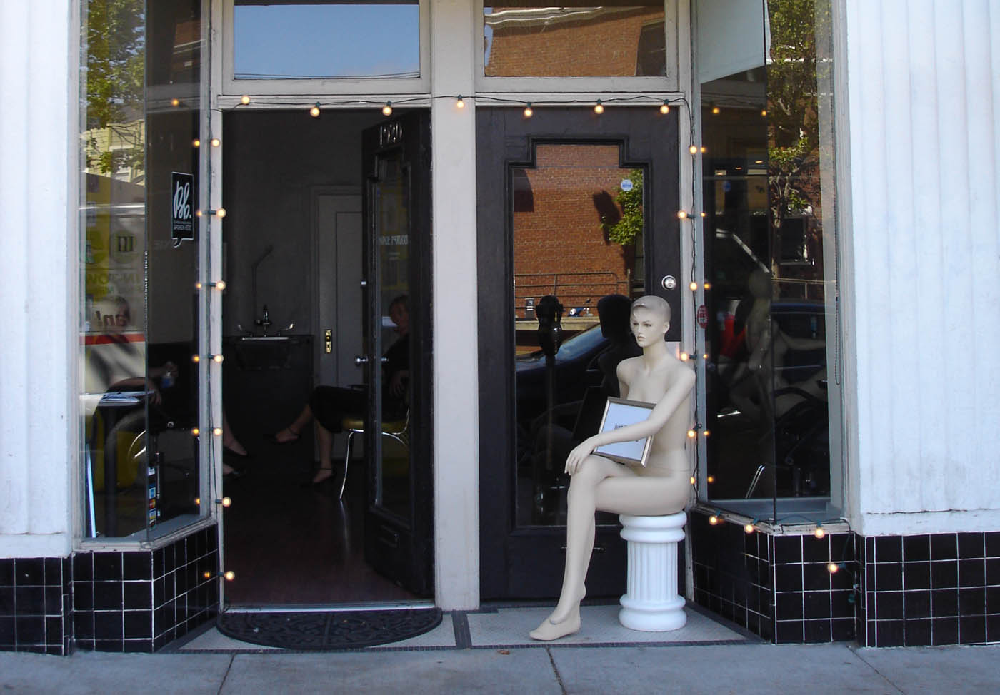

Moxie Parlour, Market St. San Francisco

The show was an examination of youth and the adult society it reflects as pieces from the past were repurposed and 'framed' through an adult perspective. The process of putting on this show was ultimately a repetition of how the original artwork was made–debuting an artwork was eerily similar to coming of age as a teenager.